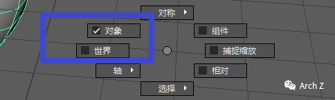
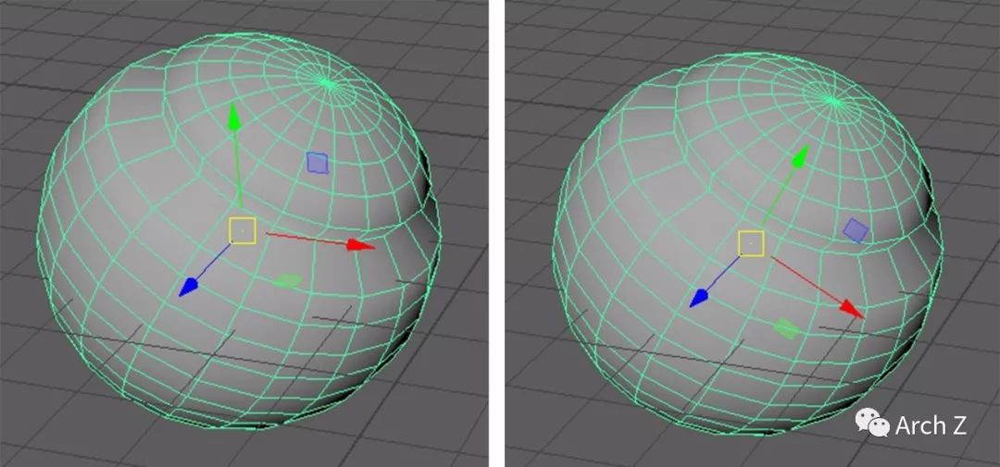
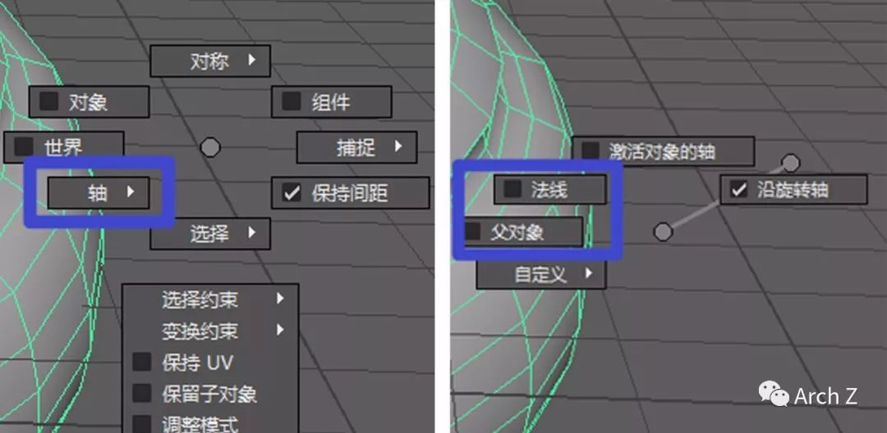
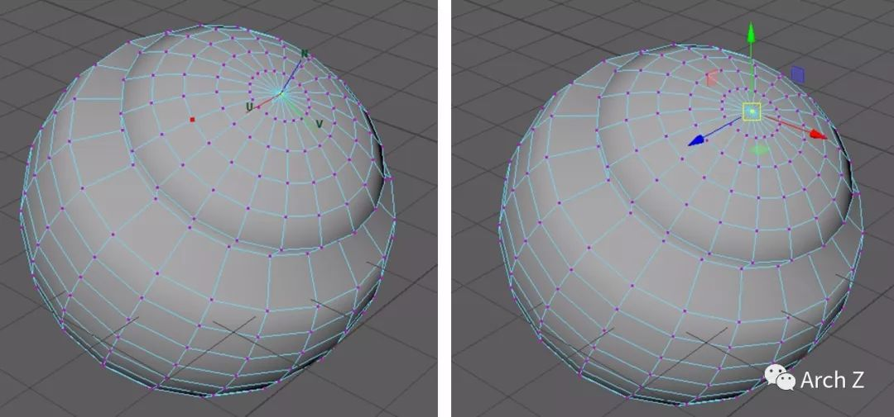
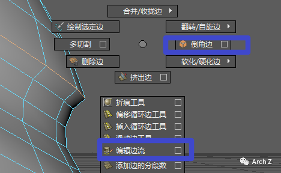
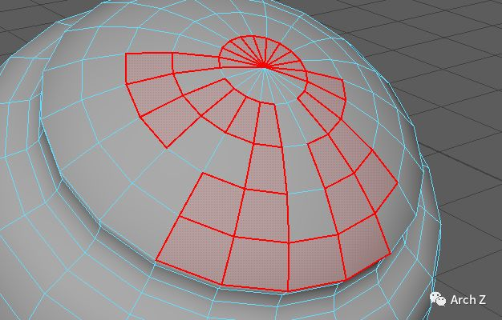
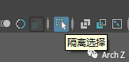
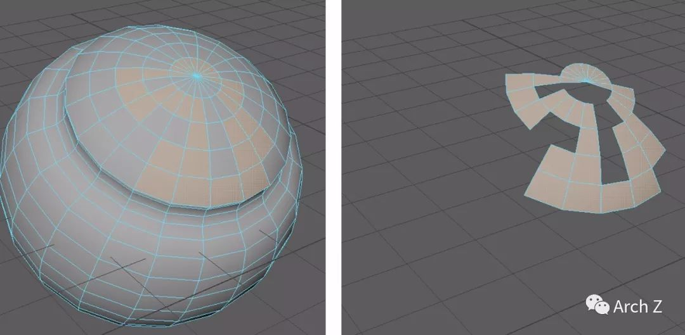

MAYA学习——Tips小结<2>
第二部分的Tips小结，主要来源于Youtube和MAYA官网上的一些教程，自己也稍微琢磨了一下。
从标记菜单（marking menu)开始吧，建模熟练的MAYA使用者都很会使用标记菜单，这是MAYA中很有特色的快捷键。它的特征是只要用键盘和鼠标手势的特定搭配就可以发出比较复杂的指令，甚至可以在视觉UI出现之前就达到指令了，所以使用熟练的人做起来就像……唰的一下，就做出了改变，屏幕上甚至没显示什么UI指令框出来。
标记菜单的调出有：按住空格，Shift+鼠标左键，Ctrl+鼠标左键，Shift+Ctrl+鼠标左键。同时是否选择了模型，是否选择了移动工具（W）等都会影响菜单的显示内容。
标记菜单（世界/对象）
比较深层的标记菜单功能（我认为深层），但是很有用。可以改变操作轴的定位方式，使我们更好操作。
在选择物件的状态下——并且在平移（W），旋转（E）或者缩放（R）状态——Shift+Ctrl+鼠标左键——鼠标拖拽选择“世界”或者“对象”

操作方式

不同的方式定位操作轴（左为“世界”，右为“物件”）
标记菜单（轴）
这个功能可以同样改变操作轴的定位方式，在想沿着法线方向移动或者缩放非常有用，而且可以多个物件（顶点等）同时操作。
在选择物件的状态下——并且在平移（W），旋转（E）或者缩放（R）状态——Shift+Ctrl+鼠标左键——鼠标拖拽选择“轴”——在子菜单中选择“法线”或者“父对象”
说起来有点复杂，用熟练就好了。

操作方式

不同的方式的操作轴（左为“轴”，右为“父对象”）
标记菜单（倒角边/编辑边流）
十分有用的工具！（真是相见恨晚），在模型的某些部位可以用这些工具使边缘流线平滑。与直接平滑模型不同的是，这个方式只平滑部分。
选择边缘环——Shift+鼠标左键——选择“倒角边”或者“编辑边流”

操作方式
连续选择
鼠标点击一次只能选择一个物件，选取多个则要多次点击。但是按住Tab+按住鼠标左键，就可以让鼠标指针滑到的物件都被选中。
按住Tab-按住鼠标左键——移动指针连续选择

操作方式
隔离选择/孤立
将选择的物件孤立出来单独编辑。
面板工具——隔离选择按钮

操作方式

隔离效果
专家模式/隐藏面板/菜单
清理UI界面，让界面更干净，腾出更多屏幕空间在建模视窗上。
Ctrl+空格，Shift+M，Ctrl+M，Shift+Ctrl+M
锁定顶点/锁定格点
锁定在很多变换中都很有用。
锁定顶点（按住V）/锁定格点（按住X）
G的多次运用
快捷键G能重复上次命令，能提高效率。
好啦差不多就是这些，希望对大家有帮助。同时推荐我最近在学习的Youtube视频FlippedNormals（https://www.youtube.com/watch?v=BAxUMjHdS84）以及（https://www.youtube.com/watch?v=-fXX4iA0w-E）之类，同时还有MAYA官方主页：http://help.autodesk.com/view/MAYAUL/2018/CHS/。如有误之处欢迎指正。

--- Growing, Growing, Brighter Everyday ! ---